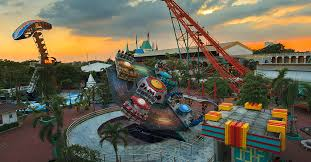
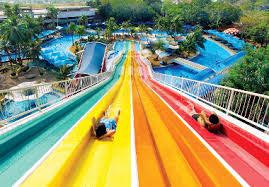
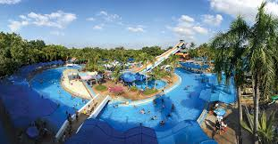

สยามอะเมซิ่งพาร์ค หรือชื่อเดิมคือ สวนสยาม เปิดดำเนินการเมื่อวันที่ 19 พฤศจิกายน พ.ศ. 2523 ดำเนินงานโดย บริษัท อมรพันธ์นคร-สวนสยาม จำกัด โดยไชยวัฒน์ เหลืองอมรเลิศ เป็นประธานกรรมการ แรกเริ่มมีเพียงสวนน้ำภายหลังจึงได้ซื้อเครื่องเล่นเดิมจากสวนสนุกแฮปปี้แลนด์ที่ได้ปิดกิจการมาให้เปิดบริการ สวนสยามจึงเป็นทั้งสวนน้ำและสวนสนุกที่ใหญ่ที่สุดของประเทศไทย นอกจากนี้ยังมีรางน้ำวน สปา พร้อมเครื่องเล่นทางน้ำครบครัน สไลเดอร์ที่สูงเท่ากับตึก 7 ชั้น ซูเปอร์สไปรัลรางน้ำคดเคี้ยว รถไฟเหาะวอร์เท็กซ์ รถไฟเหาะบูมเมอแรง และเครื่องเล่นอื่น ๆ อีกเกือบ 40 ชนิด
ที่ตั้ง ของสวนสยาม
สถานที่ท่องเที่ยวเชิงอนุรักษ์บางกอกเวิลด์ เป็นสถานที่ท่องเที่ยวเชิงอนุรักษ์โดยการนำสถาปัตยกรรมของกรุงรัตนโกสินทร์มาปรับใช้ เช่น ศาลาเฉลิมไทย ศาลาเฉลิมกรุง ห้างแบดแมนแอนด์โก ห้างบี.กริมแอนด์โก เยาวราชไชน่าทาวน์
เครื่องเล่น
ประกอบไปด้วยเครื่องเล่นที่มีความตื่นเต้นและหวาดเสียว เช่น รถไฟเหาะตีลังกาเกลียวสว่าน (Vortex), ยักษ์ตกตึก (Giant Drop), รถไฟเหาะตีลังกาถอยหลัง (Boomerang) และล่องแก่งมหาสนุก (Log Flume) และมัตัวละครมาสคอตที่สำคัญคือ Golden the Tiger
สวนน้ำ
เป็นสวนน้ำที่มีทะเลเทียมใหญ่ที่สุดในโลก ธารน้ำวน สปาคลับ รวมถึงมีเครื่องเล่นที่สำคัญคือ สไลเดอร์ยักษ์สายรุ้ง 7 สี, Super Spiral และ Si-Am Lagoon เป็นต้น มีตัวละครมาสคอตคือ Ranger the Whale